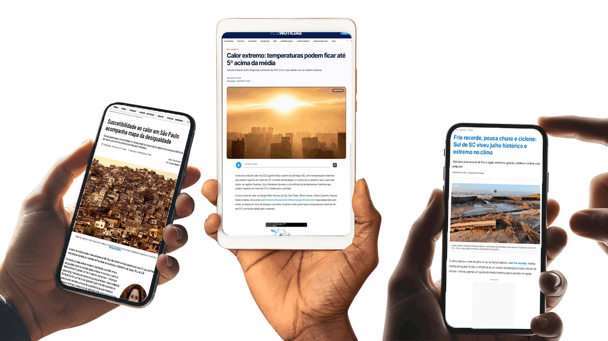
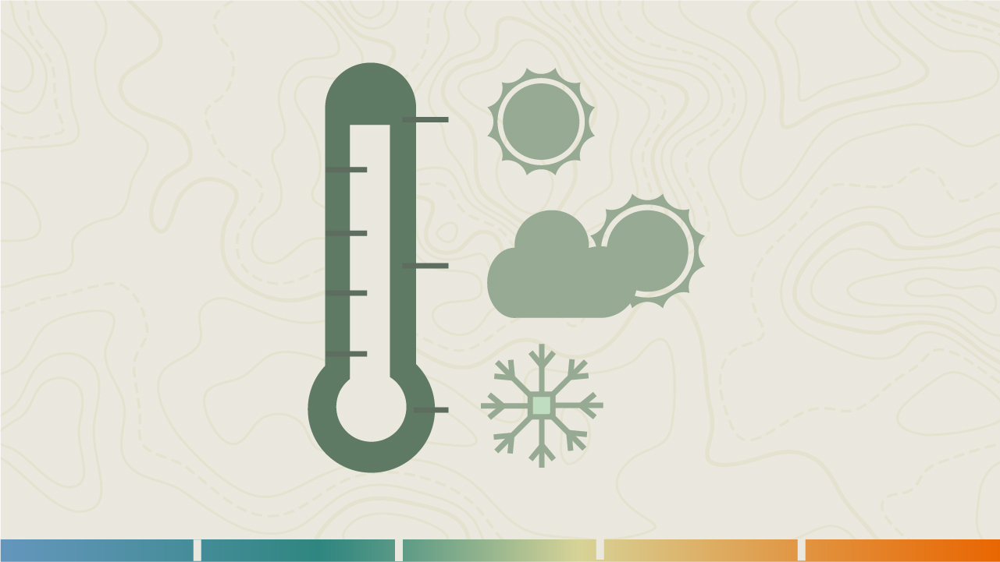
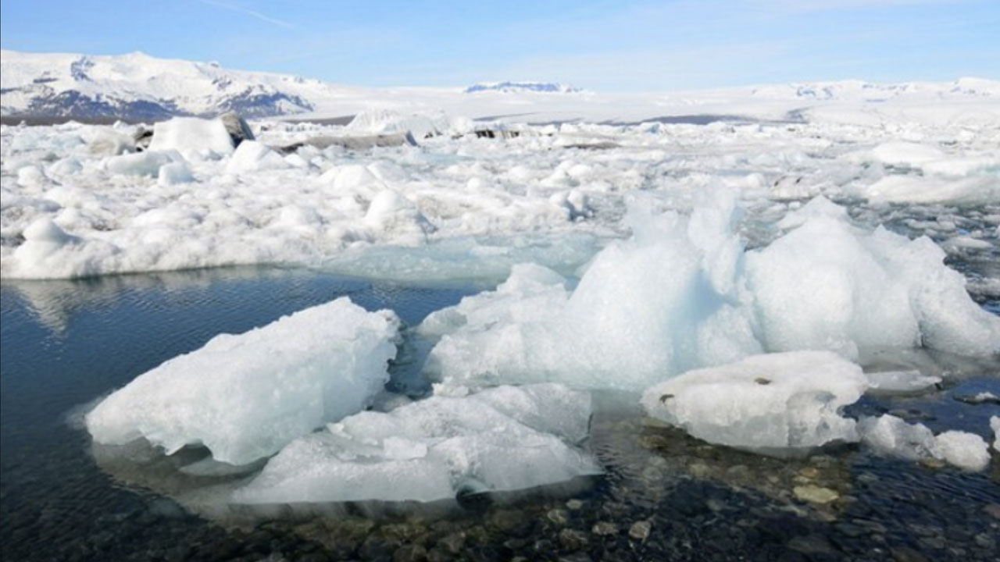
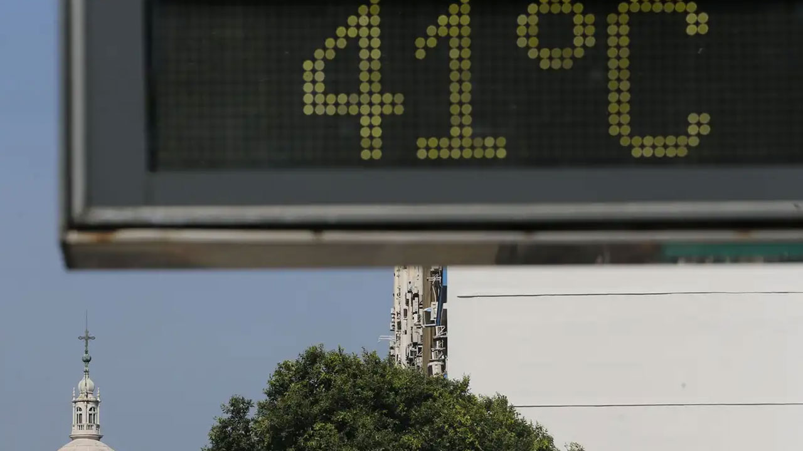

Ondas de calor e ondas de frio
Seja bem-vindo(a) à primeira aula do módulo IV.
Nesta etapa, vamos apresentar o que são extremos de temperatura, ondas de calor e ondas de frio e como estão relacionados às mudanças climáticas.
Ao final desta aula, você estará apto(a) para identificar extremos de temperatura, ondas de calor e de frio e quais os principais fatores ambientais associados a esses fenômenos.
O que são temperaturas extremas?
Como vimos nos módulos anteriores, com o avanço das mudanças climáticas estamos observando um aumento na frequência e na intensidade de eventos chamados de temperaturas extremas, ondas de calor e ondas de frio, além do calor e do frio intenso. Todos trazem efeitos relevantes na saúde e na qualidade de vida.
Mas o que significa cada um desses fenômenos?
Chamamos de temperaturas extremas aquelas que ficam muito acima (calor intenso) ou muito abaixo (frio intenso) do que seria considerado normal para um determinado lugar.

Para entender o que é “normal”, precisamos conhecer o que chamamos de normal climatológica. A normal climatológica é a média da temperatura, da chuva ou da umidade de uma região, calculada com base em 30 anos de registros. Vamos entender como funciona.

Essas informações ajudam a identificar quando uma temperatura está fora do padrão esperado, ou seja, quando se trata de um extremo de calor ou de frio.
Vamos ver um exemplo simples: imagine um dia comum de verão em uma cidade do interior de Minas Gerais. Os valores de temperatura registrados nesse dia são:
- Temperatura máxima: 38°C
- Temperatura mínima: 24°C
- Temperatura média: 27°C
- Temperaturas máximas: 34°C
- Temperaturas mínimas: 22°C
- Temperaturas médias: 25ºC
Observe que, se no dia registrado a temperatura máxima chegou a 38°C, isso significa um extremo de calor, pois está muito acima do que normalmente aconteceria na cidade (34°C). Da mesma forma, se houvesse o registro de uma temperatura mínima de 18°C, isso seria classificado como um extremo de frio, já que está abaixo do valor médio esperado, que no nosso exemplo seria de 22°C.
Mas qual é a relação entre extremos de frio e as mudanças climáticas?
Embora seja comum pensar que as mudanças climáticas vão trazer apenas aumento da temperatura, isso não acontece da mesma forma em todas as regiões nem o tempo todo. Mesmo com o aquecimento global, o planeta continua tendo suas variações naturais: períodos de inverno (mais frio) e verão (mais quente), além de regiões naturalmente mais frias ou mais quentes. Porém, as mudanças climáticas podem alterar a forma como esses períodos de frio acontecem, fazendo com que algumas regiões experimentem ondas de frio mais intensas ou inesperadas.
Uma das principais explicações está no aquecimento acelerado das regiões polares, especialmente da Antártica, localizada no polo sul. Quando a Antártica esquenta, além do derretimento do gelo, também há uma diminuição na diferença de temperatura entre a região polar e as regiões mais ao sul. Quando essa diferença diminui, a corrente de vento fica mais fraca, permitindo que o ar muito frio que deveria permanecer na Antártica “escape” para áreas mais próximas, como se a porta da geladeira fosse aberta. Isso causa episódios de frio extremo, mesmo em um planeta que está ficando cada vez mais quente.

Por esse motivo, regiões mais próximas dos polos são naturalmente mais vulneráveis a invasões desse ar polar. No Brasil, isso significa dizer que os estados do Sul e parte do Sudeste têm maior chance de registrar extremos de frio, especialmente durante o inverno. Desse modo, esses extremos de frio podem ser mais intensos ou ocorrer fora do período esperado, justamente por causa da instabilidade causada pelas mudanças climáticas.
Mesmo com o aquecimento global, o clima continua apresentando as variações naturais típicas de cada região. O que muda é a regularidade e a intensidade, pois o clima fica mais instável, transformando o que seria comum em eventos extremos e fora do esperado. As alterações na dinâmica desses fenômenos impactam a saúde, o ambiente e prejudicam a prestação de serviços de saúde.
O que são ondas de calor e ondas de frio?
Agora que entendemos o que são extremos de temperatura, podemos compreender melhor o que são ondas de calor e ondas de frio.
Acontece quando temos vários dias seguidos com temperaturas acima do esperado, ou seja, acima da média máxima registrada historicamente para aquele período e região.
Ocorre quando há uma sequência de dias com temperaturas abaixo do esperado, ou seja, abaixo da média mínima histórica para aquele período ou região.
Quando comparamos os valores de temperatura com a série histórica dos últimos 30 anos, podemos identificar não apenas se um dia está mais quente ou mais frio do que o normal, mas também se há uma sequência de dias fora do padrão esperado. Em ambos os casos, o importante é observar que não é apenas um dia diferente, e sim uma repetição de dias extremos.
E como se define uma onda de calor?
As ondas de calor têm se tornado mais frequentes, longas e intensas em várias partes do mundo nas últimas décadas. Porém, não existe uma única definição válida para todos os países e regiões, porque o clima varia muito de região para região.
A Organização Meteorológica Mundial (OMM) utiliza uma referência bastante adotada no mundo: é considerada uma onda de calor quando uma região registra temperaturas máximas diárias 5°C acima da média mensal, durante cinco dias consecutivos ou mais.
Mas essa não é a única forma de identificar o fenômeno. Outras definições podem considerar, por exemplo, 3 ou 4 dias seguidos com temperaturas acima de 90% das maiores temperaturas registradas nos últimos 30 anos, ou um período ainda mais longo, porém com um “excesso de temperatura” menor. Por isso, algumas classificações são mais conservadoras (exigem temperaturas muito extremas ou muitos dias seguidos), enquanto outras são mais flexíveis (bastam menos dias de calor acima do normal).
Independentemente da definição utilizada, precisamos nos lembrar de que mesmo as menores ondas de calor já podem impactar negativamente a saúde humana. Além disso, quanto maior e mais intensa a onda de calor, pior será o resultado para a saúde das pessoas e para o sistema de saúde.
Fatores ambientais, sociais e demográficos associados a ondas de calor e de frio

Para entendermos a ocorrência e os potenciais efeitos de ondas de calor e de frio, também precisamos conhecer alguns fatores que podem estar associados à maior intensidade de uma onda de calor. Fatores como a presença de área verde podem reduzir a temperatura local, enquanto uma maior densidade populacional ou a poluição do ar podem intensificar a temperatura e tornar a onda de calor, por exemplo, ainda pior.
Os ambientes urbanos são especialmente favoráveis para intensificar as ondas de calor. Nas cidades, há muito mais áreas construídas e grandes superfícies asfaltadas cobrindo o solo. Isso impede que o solo absorva e disperse a radiação solar de forma natural, fazendo com que o calor fique retido e aumentando ainda mais a temperatura local.
As áreas urbanas também têm muitos edifícios altos, que bloqueiam a circulação dos ventos e dificultam a movimentação do ar, reduzindo a dissipação do calor. Além disso, a poluição produzida por fábricas e veículos piora a qualidade do ar e pode agravar os riscos à saúde durante uma onda de calor. Esses ambientes com características que favorecem a intensificação do calor são chamados de “ilhas de calor”. Por outro lado, áreas com presença de vegetação, solo exposto ou corpos d’água tendem a aumentar o conforto térmico, reduzindo a temperatura local.
![Infográfico explicativo sobre o “efeito ilha de calor urbana”, o efeito Ilha de Calor Urbana (ICU) afeta as grandes cidades e consiste no fato de que os núcleos urbanos apresentem temperaturas mais altas que suas áreas circundantes, ou seja, à medida que nos afastamos em direção à periferia, as temperaturas tendem a diminuir. No lado direito há uma escala vertical de temperatura, de baixo para cima as temperaturas são: 30 °C, 31 °C, 32 °C, 33 °C, no centro da imagem há linhas horizontais tracejadas atravessando toda a imagem, alinhadas com a escala de temperatura à direita. Na parte de baixo existe uma representação visual contínua do território, mostrando diferentes áreas, da esquerda para a direita começando por: População rural, residencial suburbano, parque industrial, cidade, residencial urbano, parque, residencial suburbano, propriedades rurais agrícolas. Na lateral esquerda, próximo à linha do gráfico, aparece a legenda: “Temperatura ao entardecer”, em parte do trajeto urbano, essa linha fica destacada em laranja avermelhado. A curva começa mais baixa nas extremidades, sobe gradualmente ao entrar na cidade, atinge um pico máximo no centro urbano e volta a cair quando sai da região central, o ponto mais alto da curva está próximo de 33°C.](../media/images/modulo4/aula1-img6.png "Fonte: Elaborado pelo Campus Virtual Fiocruz, adaptado de Agência de Proteção Ambiental dos EUA (EPA, em inglês)")
Outro fator importante é o acesso das pessoas a condições adequadas de moradia e infraestrutura. Casas mal ventiladas, com pouco isolamento térmico ou sem acesso à água, energia elétrica ou ventilação adequada, aumentam os impactos de uma onda de calor. Da mesma forma, durante as ondas de frio, moradias precárias deixam as pessoas mais expostas às baixas temperaturas.
Alguns fatores ambientais podem ajudar a amenizar os efeitos das ondas de calor, como a presença de rios, lagos, represas e até áreas úmidas, que contribuem para reduzir a temperatura do ambiente ao redor. O relevo também influencia, já que regiões mais altas tendem a apresentar temperaturas naturalmente mais amenas do que áreas localizadas em baixadas ou vales, onde o ar quente costuma ficar mais concentrado.
Resumindo, nesta aula vimos que as mudanças climáticas têm aumentado a frequência e a intensidade das temperaturas extremas e as ondas de calor e de frio, caracterizadas por vários dias consecutivos com temperaturas acima ou abaixo da média climatológica.
Além disso, entendemos que, concomitante ao aquecimento global, ainda ocorrem episódios de frio intenso devido a alterações nos padrões climáticos, como o aquecimento das regiões polares. Também observamos como os fatores ambientais e urbanos, como a poluição, a falta de áreas verdes e a alta concentração de construções, podem intensificar esses fenômenos, formando ilhas de calor.
Por fim, destacamos como as condições de moradia e infraestrutura influenciam diretamente e impactam na saúde e no bem-estar da população. Na próxima aula, vamos entender os efeitos que os extremos de temperatura provocam na saúde das populações.